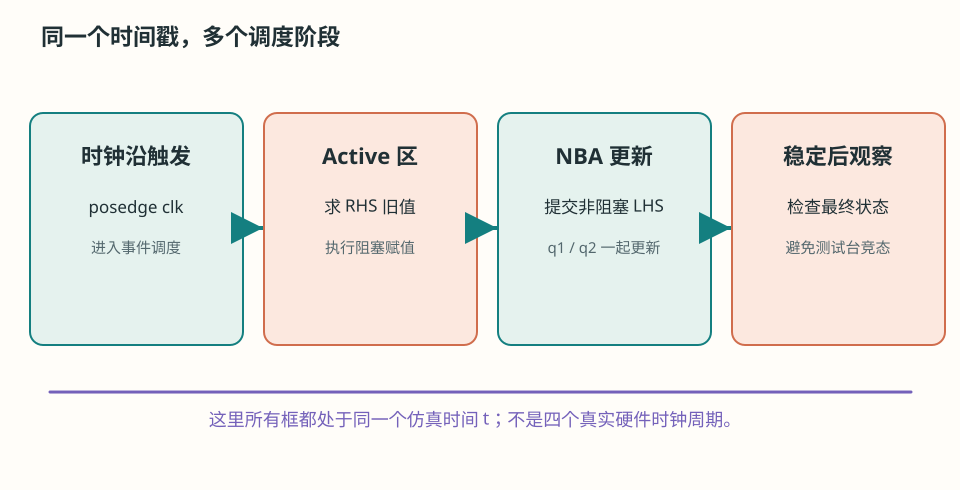

同一个时钟沿，到底先发生什么？
用两级寄存器、事件队列与完整赋值，理解阻塞赋值、非阻塞赋值及锁存器的边界。
01 / 同一个时钟沿，为什么流水线要读旧值？
假设 din=1，原来 q1=0、q2=0。在一个时钟上升沿，若希望 q1 接住 din、q2 接住 q1 的上一拍值，应怎样写？

module pipe2 (
input wire clk,
input wire din,
output reg q1, q2
);
always @(posedge clk) begin
q1 <= din;
q2 <= q1;
end
endmodule这段代码与两个串联的 D 触发器完全一致。每个时钟沿，右侧表达式按事件调度读取旧值，非阻塞赋值延后提交左侧更新。由此 q2 自然比 q1 晚一个采样沿。
02 / 阻塞与非阻塞赋值对应哪种调度？
阻塞赋值 = 在当前过程里按顺序更新变量，后续语句可读到该过程里刚写的值。非阻塞赋值 <= 先计算 RHS，再在 NBA 更新阶段修改 LHS。这是语言仿真事件调度语义，不是某种直接可见的电路延迟。

| 写法 | 常见用途 | 容易误解 |
|---|---|---|
= | 组合过程、中间临时量 | 如果在多个独立时钟块中传播数据，可能出现仿真竞态 |
<= | 触发器寄存状态 | 同一时刻提交不表示 RHS 是新值 |
assign | 网络的连续驱动 | 不是顺序执行的赋值语句 |
推荐的工程习惯是：时钟触发的寄存器更新使用非阻塞赋值；纯组合过程使用阻塞赋值。 这不是语法强制规定，而是便于模拟硬件并避免竞态的健壮风格。
若多个 always 在同一时间戳中读写共享信号，测试台和 DUT 的采样也应避免在相同边沿无同步规则地交错。不要因为单次仿真通过就断言代码没有竞态。
03 / always @(*) 怎样避免意外锁存器？
一段过程是否是组合逻辑，关键在于每个可能路径是否都对输出赋值。如果某个路径需要“保持之前的 y”，工具就可能推断电平敏感锁存器。这与 FF 按时钟沿锁存完全不同。
// 有意展示问题：sel=1 时 y 必须保持旧值
always @(*) begin
if (!sel)
y = a; // 没有 else，可能推断 latch
end
// 完整赋值：不需要保持旧值
always @(*) begin
y = b; // 先给默认值
if (!sel)
y = a;
end从组合逻辑的数学表达来看，完整版本等价于 y = sel ? b : a。如果使用 case，可以设置默认赋值或覆盖所有合法组合；同时要分析 X/Z 仿真条件，而不是依赖 casex 掩盖未知值。
always @(posedge clk) 里少写 else”通常代表寄存器保持当前值，不等同于组合锁存器。判断前务必确认敏感事件与时序意图。04 / parameter、位宽与复位如何影响结构？
parameter 允许在实例化时定制电路结构，localparam 用于模块内不应从外部覆写的局部常量。它们在 elaboration（设计展开）阶段影响宽度、生成分支和实例数，不能把参数当作运行时输入端口。
module register_n #(
parameter WIDTH = 8
) (
input wire clk,
input wire rst_n,
input wire [WIDTH-1:0] d,
output reg [WIDTH-1:0] q
);
always @(posedge clk) begin
if (!rst_n) q <= {WIDTH{1'b0}};
else q <= d;
end
endmodule
// 实例化时得到 16 位寄存器
// register_n #(.WIDTH(16)) u_reg (...);这段是同步低有效复位：只有上升沿才会执行 if (!rst_n)。改成异步复位需要在事件控制中加入复位边沿，并检查目标器件对控制引脚的支持、复位释放与时序约束。
05 / 测试台该在哪个时刻检查 q？
如果在 @(posedge clk) 立刻比较非阻塞赋值的结果，检查逻辑可能早于 NBA 更新而看到旧值。初学者可以先用下一个下降沿观察上一上升沿之后的稳定结果，避免测试台竞态。
module tb;
reg clk = 0, din = 0;
wire q1, q2;
pipe2 dut (.clk(clk), .din(din), .q1(q1), .q2(q2));
always #5 clk = ~clk;
initial begin
@(negedge clk); din = 1;
@(negedge clk);
if (q1 !== 1 || q2 !== 0)
$fatal(1, "first sampling edge");
@(negedge clk);
if (q1 !== 1 || q2 !== 1)
$fatal(1, "second sampling edge");
$display("PASS pipe2");
$finish;
end
endmodule保存 pipe2 与该 tb 于同一文件，运行 iverilog -g2012 -s tb -o /tmp/pipe2.vvp pipe2.v && vvp /tmp/pipe2.vvp；预期为 PASS pipe2。更复杂的 SystemVerilog 验证环境可以使用 clocking block 等机制约束采样驱动区域。
练习：把 pipe2 的两条 <= 改成 =，一定会得到正确的两个寄存器吗？
不能保证。阻塞赋值在同一过程内按顺序生效，会使 q2 读取刚写入的 q1，产生与预期两级流水线不同的模拟结果。跨过程同时写读还可能产生调度竞态。